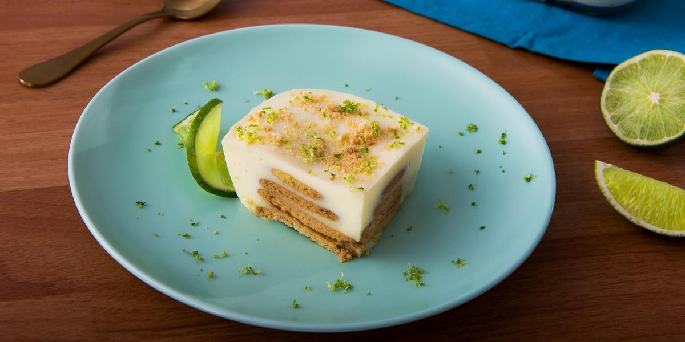

Carlota de Limón

Prepacaion
30 Min
Espera
3 H
Total
3 H 30 Min
Porciones
8 Personas
Ingredientes
(315 g.) 1 lata de Leche Evaporada IDEAL®
(397 g.) 1 lata de Leche Condensada LA LECHERA®
(113 g.) ½ barra o ½ taza de queso crema a temperatura ambiente
(122 ml.) ½ taza de jugo de limón fresco
30 galletas tipo María
Preparacion
1Licuar la Leche Evaporada IDEAL®, la Leche Condensada LA LECHERA®, el queso crema y el jugo de limón.
2En un molde cuadrado no tan alto (aprox. 9”x9” y 2” de alto), colocar una capa de galletas (aprox. 10 galletas), una capa de crema y distribuirla con una espátula. Repetir las capas, de tal forma que la ultima sea de crema.
3Cubrir la última capa con ralladura de limón y galletas maría trituradas. Cubrir la carlota con papel aluminio o cubierta plástica y refrigerar por al menos 6 horas.
4Servir y disfrutar.